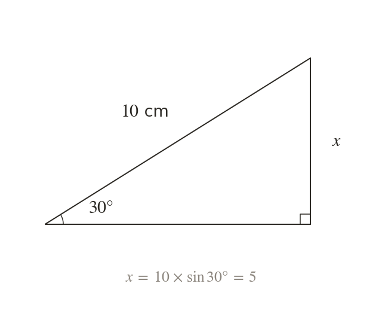
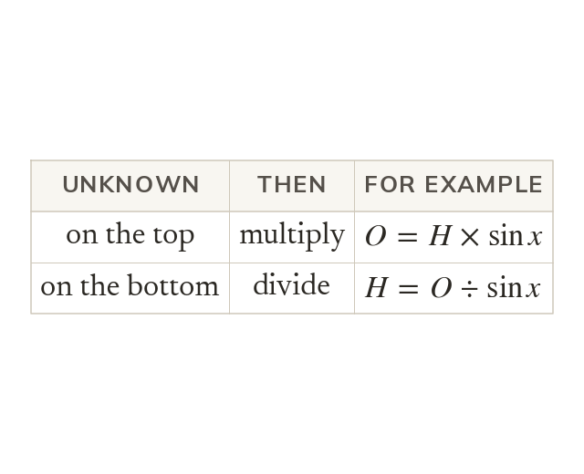
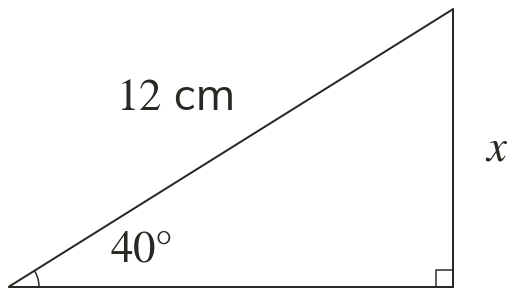
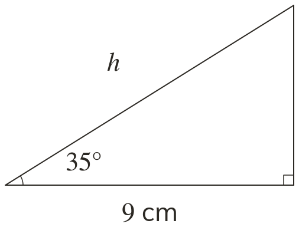
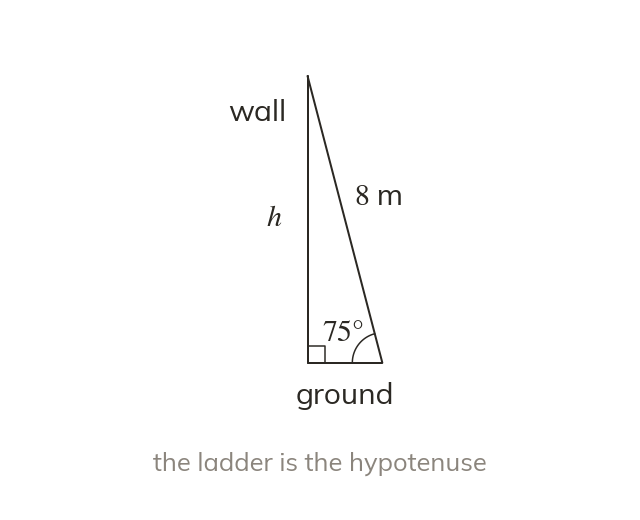
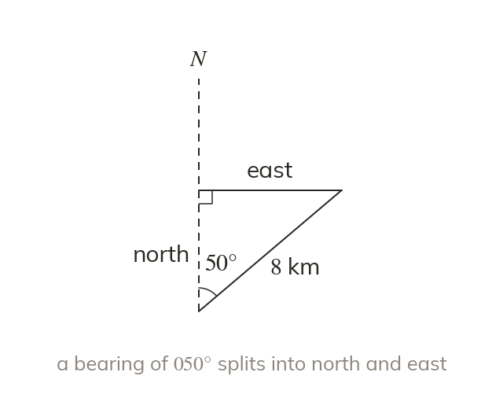
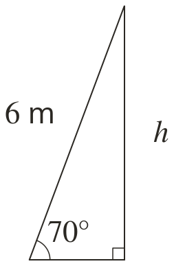
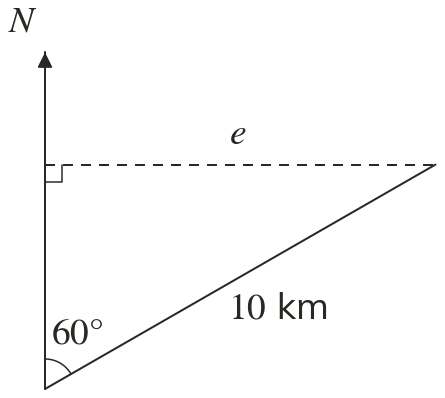

Rearrange the ratio
Rearranged, gives So here cm.
From the opposite side is the With a hypotenuse of cm and an angle of the opposite side is cm.
With one angle and one side, trigonometry finds any other side of a right-angled triangle. Surveyors and pilots use it every day.
Work down the page at your own pace. Write every answer in your book first, then click to check it.
Read each card, then follow the worked examples one step at a time.

Rearranged, gives So here cm.

When the unknown side is on the top of the ratio, multiply. When it is on the bottom, divide, as in
The hypotenuse is always the longest side. An answer that makes another side longer than the hypotenuse is wrong.


Pick an answer. If it's wrong, the feedback tells you which mistake it was.
Read each card, then follow the worked examples one step at a time.

A problem in words is turned into a right-angled triangle before any ratio is chosen. A ladder, a wall and the ground make one, with the ladder as the hypotenuse.

A bearing is measured clockwise from north, and north and east are at right angles. So a journey on a bearing splits into a distance north and a distance east.


Pick an answer. If it's wrong, the feedback tells you which mistake it was.
Finished? Next lesson: 10.19.3 Finding a Missing Angle.
Log in, then search for a code to practise that skill.